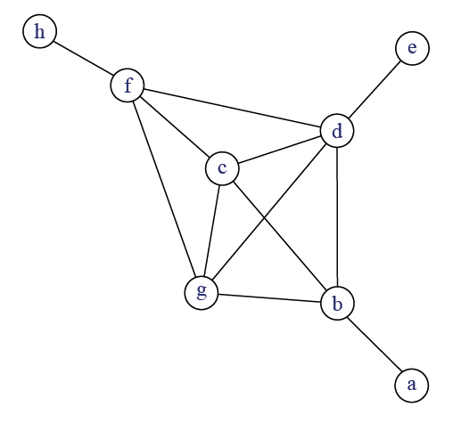
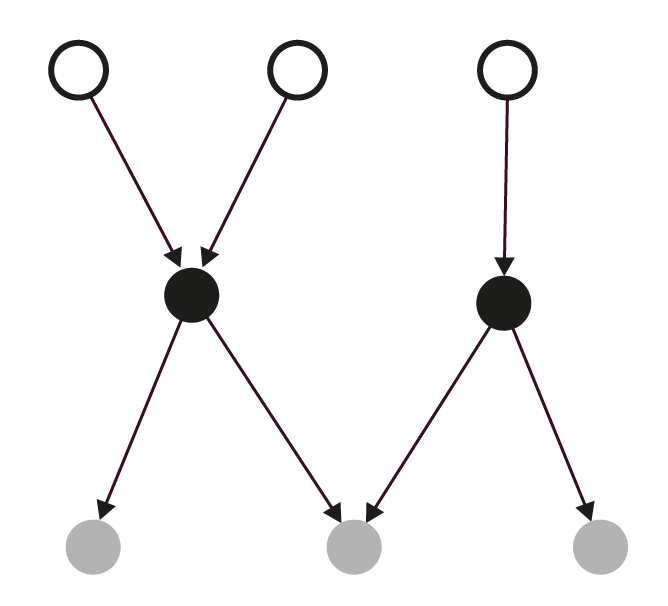
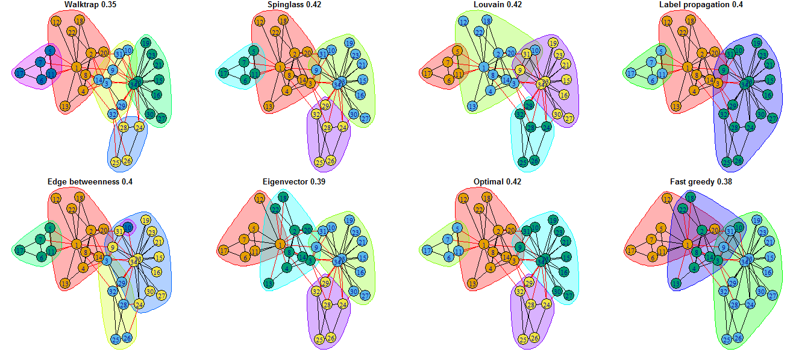

6 Simplifier, partitionner
Deux démarches complémentaires sont présentées dans ce chapitre :
- les démarches de simplification d’un réseau ;
- les démarches de partitionnement des sommets.
Dans le premier cas, il s’agit de se débarrasser d’éléments (sommets et/ou liens) considérés comme peu utiles pour l’analyse ; dans le deuxième cas, de créer des classes de sommets basées sur les propriétés structurales du réseau étudié. Les méthodes de partitionnement sont nombreuses et seules celles couramment implémentés dans les logiciels les plus utilisés sont présentées ici.
Toutes les démarches présentées ne sont pas adaptées à tous les réseaux étudiés et, comme pour les mesures présentées dans le chapitre précédent, il est prudent de comprendre ce que l’on fait (propriétés générales de l’algorithme choisi, rôle des paramètres) avant de commenter les résultats obtenus, certaines méthodes ayant un aspect boîte noire quelque peu gênant (cf infra l’exemple de la méthode CONCOR).
6.1 Supprimer des éléments
Une fois les données relationnelles mises en forme, une fois les mesures de base effectuées, il peut être utile de simplifier le réseau obtenu. C’est notamment le cas lorsque le réseau est gros et/ou dense. Les méthodes de simplification visent généralement à préserver la structure d’ensemble du réseau tout en éliminant au maximum les phénomènes considérés comme peu significatifs. Trois démarches complémentaires peuvent être mises en œuvre pour faciliter l’analyse et/ou proposer des visualisations lisibles du ou des réseaux étudiés (ce dernier aspect sera abordé dans le chapitre 12) : supprimer des liens, agréger des sommets et enfin supprimer des sommets. Dans tous les cas, il est bien sûr nécessaire de décrire la méthode utilisée, de la justifier et de ne pas oublier les transformations effectuées lorsqu’on commente les résultats obtenus sur le réseau simplifié.
6.1.1 Arbre couvrant minimum et flux dominants
La recherche de l’arbre couvrant minimum (minimum spanning tree) peut permettre de mieux comprendre la structure générale du réseau, que celui-ci soit ou non valué. Comme le nom le suggère, il s’agit d’un arbre (suppression de tous les cycles présents dans le réseau étudié) couvrant (il passe par tous les sommets) et il contient le nombre de liens le plus faible possible. Cette manière de supprimer des liens peut donner des résultats plus ou moins probants en fonction des données étudiées. Lorsque le réseau est valué, l’objectif est d’obtenir un arbre où la somme du poids des liens est minimale. Les réseaux d’infrastructures se prêtent généralement bien à ce type de simplification ; les réseaux sociaux très denses avec un diamètre faible gagnent peu à être simplifiés ainsi.
Une autre méthode visant à supprimer des liens valués a été proposé par les géographes étasuniens Nystuen and Dacey (1961) 1. L’objectif est, en partir d’une matrice de flux orientés, de créer un arbre (ou une forêt) hiérarchisant les sommets.
Les flux sont sélectionnés en appliquant les deux règles suivantes :
- pour chaque sommet \(v_i\), ne garder que le flux sortant le plus important \(f_i\);
- si le flux est émis vers un sommet \(v_j\) dont le degré entrant pondéré est inférieur à celui de \(v_i\), supprimer ce flux.
On obtient quatre catégories de sommets :
- les sommets isolés qui ne dominent personne et ne sont pas dominés ;
- les sommets dominés avec un lien sortant ;
- les sommets intermédiaires avec un ou plusieurs liens entrants et un lien sortant ;
- les sommets dominants avec uniquement des liens entrants.
Cette méthode simple crée une partition et une hiérarchie entre sommets. À ma connaissance, cette méthode n’a jamais été testée en dehors de la géographie quantitative où elle donne souvent des résultats intéressants et des régionalisations convaincantes.
Les autres méthodes disponibles pour sélectionner des liens valués sont généralement basées sur des critères statistiques et elles supposent d’étudier la distribution des intensités. La grande majorité des matrices de flux suivent des distributions de Paretto (20 % des liens concentrent au moins 80 % du volume) : il est donc souvent possible de supprimer les liens les plus faibles, qui sont aussi les plus nombreux, tout en conservant la très grande majorité du volume du flux étudié.
6.1.2 Suppression et/ou agrégation de sommets
Une des méthodes les plus répandues pour mieux appréhender la structure globale d’un réseau consiste à supprimer les sommets les moins connectés, qu’ils soient isolés ou de degré faible. Il est recommandé de rappeler la proportion de sommets supprimés lorsqu’on commente les résultats obtenus sur le réseau ainsi modifié.
Inversement, dans certains cas, il peut être intéressant de supprimer les sommets les plus centraux. Si j’étudie les relations diplomatiques au niveau mondial, il est propable que tous les États ou presque entretiennent des relations avec les États-Unis, la Belgique (UE oblige) et la Chine. Supprimer ces liens attendus peut permettre de mettre en évidence des configurations régionales intéressantes.
Une troisième option consiste à agréger les sommets qui occupent la même position dans le réseau ; on parle dans ce cas d’isomorphisme. Les méthodes développées dans les sections suivantes permettent de créer des partitions, partielles ou exhaustives, des sommets afin d’obtenir des représentations simplifiées du réseau analysé.
Si le réseau étudié est particulièrement dense, il peut être intéressant, plutôt que de supprimer des liens et/ou des sommets, de se pencher sur les liens manquants en étudiant le complément du graphe 2.
6.2 Rechercher les cliques
La recherche de sous-ensembles denses dans un réseau présente un intérêt, notamment que le réseau étudié a une structure de type centre - périphérie ou, au contraire, lorsqu’il est éclaté en différents sous-réseaux denses.
L’une des définitions les plus anciennes, et qui peut garder sa pertinence si le réseau est de taille réduite, est celle de clique (terme identique en anglais 3). Une clique est un sous-graphe maximal complet de trois sommets ou plus. Si la définition brille par sa concision, elle mérite d’être expliquée terme à terme. Un sous-graphe consiste en un sous-ensemble du réseau. Il est maximal si et seulement si il n’est pas possible d’y ajouter le moindre sommet sans lui faire perdre sa caractéristique. Enfin, il est complet : tous les liens possibles entre les sommets de ce sous-graphe sont présents. La contrainte sur le nombre de sommets évite que chaque lien ne soit compté comme une clique.
Un même sommet peut être présent dans plusieurs cliques (figure 6.1): le terme d’overlap (chevauchement) est utilisé dans la littérature anglophone. Si la clique a une définition mathématique claire, elle présente deux inconvénients majeurs. Elle peut être considérée comme trop exigeante dans la mesure où il suffit qu’un seul lien manque pour que des sommets soient dans des cliques différentes. Par ailleurs, si elle a une utilité pour les réseaux de petite dimension, la recherche des cliques présente peu d’intérêt lorsque le nombre de sommets dépasse les centaines (nombre élevé de cliques de petite taille, chevauchements importants, temps de calcul élevé).

Intuitivement, on voudrait obtenir un ensemble de sommets centraux (\(bcdfg\)) et des sommets périphériques (\(aeh\)). L’absence du lien entre \(b\) et \(f\) entraine la présence de deux cliques différentes : \(cdfg\) et \(bcdg\).
Un certain nombre de définitions plus souples ont donc été proposées en SNA (Wasserman and Faust (1994), p. 257-270 4). Un k-core est un sous-graphe maximal dans lequel chaque sommet à un degré minimal de \(k\). La figure 6.1 comprend un 4-core constitué par les sommets \(bcdfg\). La valeur de \(k\) est fixée par la chercheuse et dépend de la densité du réseau étudié (plus la densité augmente, plus je peux augmenter \(k\)).
Qu’il s’agisse des cliques ou des k-cores, ces méthodes sont principalement employées pour des réseaux non planaires, non orientés, unimodaux et binaires. Des adaptations ont été proposées pour les réseaux bimodaux (chapitre 7) ; pour les réseaux valués, une stratégie possible serait de tester différents seuils pour conserver les liens (supprimer les liens inférieurs à 1, à 2, etc.) et de voir quelles cliques restent présentes avec des seuils élevés. Il s’agirait alors moins de définir des cliques stricto sensu que de déterminer des zones d’intensité plus ou moins forte.
Si la recherche de cliques peut mettre en évidence des sous-réseaux denses, elle ne permet pas une partition de l’ensemble des sommets. À l’inverse, les méthodes de blockmodeling et les méthodes de détection de communautés créent des partitions exhaustives, tout sommet du réseau appartient à un bloc/une communauté, et généralement exclusives, aucun sommet ne peut être membre de plus d’un bloc/une communauté.
6.3 Blockmodel et équivalences
L’objectif du blockmodel est de produire une image simplifiée du réseau étudié. Il suppose trois étapes :
- ordonner la matrice d’adjacence afin de produire des ensembles présentant une forte densité interne ;
- agréger les ensembles détectés afin de créer une partition des sommets en des sous-ensembles discrets appelés positions ;
- créer la matrice d’adjacence entre ces positions (image matrix) ; le réseau entre ces positions est parfois qualifié de réseau réduit (reduced graph).
Plusieurs méthodes sont disponibles pour créer cette partition. Classiquement en SNA, deux formes d’équivalence sont régulièrement utilisées : l’équivalence dite structurale (structural equivalence) et l’équivalence régulière (regular equivalence). Dans le premier cas, deux sommets sont regroupés lorsqu’ils sont en relation avec les mêmes autres sommets ; dans le deuxième cas, deux sommets sont regroupés s’ils ont le même type de relation avec le même type de sommets. L’équivalence structurale est particulièrement exigeante : le réseau de 8 sommets à gauche de la figure 6.2 permet la création d’un seul ensemble de deux sommets seulement (les deux sommets blancs émettant un lien vers le même sommet noir).

La teinte des sommets à gauche est fonction de l’équivalence régulière et donc les liens avec le même type de sommets. La matrice résume le réseau de départ en montrant les liens entre les trois positions.
Exemple : Snyder and Kick (1979) proposent dans leur article une analyse structurale des relations internationales basée sur les théories de l’échange inégal. Ils partent de quatre matrices binaires et orientées de relations entre États (relations économiques, diplomatiques, commerciales, militaires) et utilisent la méthode CONCOR pour produire un blockmodel avec trois positions correspondants au centre, à la périphérie intégrée et à la périphérie. Cette méthode, fondée sur une itération de corrélations de matrices, produit souvent des résultats interprétables même si, comme le notent Wasserman et Faust dans leur manuel, les propriétés mathématiques de cette méthode sont mal comprises voire obscures 5.
Ces méthodes ont été développées dans la SNA au début des années 1970 pour des réseaux uni-modaux, orientés et non valuées. Différentes adaptations ont été proposées depuis pour des réseaux valués, non orientés, bimodaux, etc. Elles sont semble-t-il moins utilisées aujourd’hui pour partitionner les sommets que les méthodes de détection de communautés présentées dans la section suivante.
6.4 Détecter des communautés
En analyse de réseau, notamment en physique et en informatique, on parle de communautés (communities) pour désigner des sous-graphes où la densité de liens entre les sommets de ce sous-graphe est plus importante qu’avec les sommets extérieurs. Le terme cluster est parfois utilisé dans le même sens. Là où les méthodes de blockmodeling créent des partitions de sommets non nécessairement voisins les uns des autres, les méthodes de détections de communautés créent des sous-graphes fortement connexes.
Une détection de communautés crée une partition exhaustive (tous les sommets sont assignés à une communauté) et généralement exclusive (les sommets sont assignés à une seule communauté). Une détection de communautés se fait en deux temps : choisir l’algorithme (il en existe beaucoup) puis mesurer la qualité de la partition obtenue (là aussi, plusieurs indicateurs existent pour mesurer cette qualité).
Deux petites mises en garde me paraissent utiles. Quand vous présentez vos résultats, s’il vous plaît, n’affirmez pas “dans mon réseau, on a les communautés suivantes” tout en projetant un “joli” réseau plein de couleurs. Ce que vous présentez est la partition obtenue avec un algorithme donné et des paramètres donnés : d’autres algorithmes créeraient des partitions différentes et peut-être tout aussi pertinentes. Le fait que certains logiciels ne proposent qu’une seule méthode de détection de communautés favorise sans doute cette façon maladroite de présenter ses résultats. N’hésitez pas, comme le fait par exemple Paul Gourdon dans sa thèse (Gourdon (2021), p.278-315), à tester différents algorithmes pour repérer quels sommets sont systématiquement mis ensemble et, à l’inverse, quels sommets ont des appartenances changeantes. Il est tout à fait possible de créer ainsi des gradients d’appartenance aux communautés qui évitent le côté parfois arbitraire des assignations obtenues avec un seul algorithme.
Plus important peut-être : il existe des structures de réseaux où la détection de communautés n’a strictement aucun intérêt. Chercher des communautés dans un arbre est inutile : chercher des communautés dans un réseau de type centre très densément connecté et périphérie très peu connectée est tout aussi inutile ; préférez les blockmodels dans ce dernier cas.
Si l’on en croit Cazabet (2013), il y aurait plus de 250 algorithmes de détection de communautés ; sa thèse ayant dix ans, le nombre a dû sensiblement augmenter. En pratique, une poignée seulement d’algorithmes est utilisée : certains sont dits déterministes , ils produiront toujours la même partition ; d’autres non déterministes, la partition créée sur un même réseau peut varier légèrement. Par ailleurs, certaines méthodes sont descendantes (la population de sommets est divisée par itérations successives) ; d’autres sont ascendantes (les sommets sont groupés deux à deux par itérations successives). Dans les deux cas, cela produit un dendogramme qui sera coupé pour obtenir des classes, la coupe s’effectuant à un niveau maximisant une mesure de qualité de la partition. L’une des mesures les plus couramment utilisée est celle de la modularité : plus elle est proche de 1, meilleure est la partition.
La figure 6.3 montre les différentes partitions obtenues sur le jeu de données du Zachary karate club 6. Le nom indiqué est celui de l’algorithme ayant produit la partition, l’indice celui de la modularité.

La détection de communautés est devenue une pratique très commune en analyse de réseau, la recherche sur le sujet est très dynamique et des adaptations sont régulièrement proposées pour tous les types possibles et imaginables de réseaux (valués, multiplexe, bimodaux, dynamiques, etc.). L’implémentation dans des logiciels utilisables en sciences sociales reste rare.
À l’intention des formatrices
Il n’est ni utile ni nécessaire de rentrer dans les subtilités mathématiques des différents algorithmes couramment utilisés en analyse de réseau ; par contre, avoir une toute petite idée du processus et des limites est intéressant (je renvoie au billet évoqué à l’instant).
Le principal objectif quand on aborde ce sujet est d’expliquer voire de marteler :
- qu’il existe différents méthodes ;
- qu’elles donnent différents résultats ;
- que la qualité des partitions peut s’évaluer de différentes manières.
Pour le formuler autrement : aucun logiciel ne sait “détecter les communautés dans un réseau”. Par contre, plusieurs logiciels proposent d’utiliser la méthode de Louvain en maximisant la modularité - parce que c’est rapide et relativement efficace sur les gros réseaux.
N’hésitez pas à encourager les pratiques comparatives et à prôner les partitions floues qui peuvent être plus intéressantes à commenter d’un point de vue thématique.
Dans les quatre chapitres suivants, vous ne trouverez pas d’encadré À l’intention des formatrices. Les réseaux bimodaux, multiplexes et dynamiques sont souvent transformés pour être étudiés comme des réseaux simples, éventuellement valués. Garder la structure originale du réseau étudié suppose me semble-t-il un minimum de familiarité avec les méthodes les plus courantes. L’absence d’encadré dans le chapitre consacré à l’analyse des réseaux personnels est lié à ma faible pratique de ce type d’analyse.
Une version bilingue et commentée est disponible dans la collection “textes” du groupe fmr.↩︎
Le complément du graphe, appelé aussi graphe complémentaire ou graphe inversé, du graphe simple \(G\) est le graphe \(G'\) tel que deux sommets de \(G'\) sont adjacents si et seulement si ils ne sont pas adjacents dans \(G\).↩︎
Le terme a souvent été, et reste encore, employé dans la sociologie anglophone dans un sens métaphorique de petit groupe soudé d’individus ; ce n’est pas le sens retenu ici.↩︎
La détection de cliques et de k-cores est présente dans plusieurs logiciels ; les autres méthodes sont plus rarement implémentées.↩︎
“the formal properties of the procedure are not well understood […] the exact mathematical properties of CONCOR remain obscure (it is not clear what, if anything, it is optimizing)” (Wasserman and Faust (1994), p. 380-381).↩︎
Figure tirée d’un billet de 2019 où je détaille les algorithmes disponibles avec igraph.↩︎